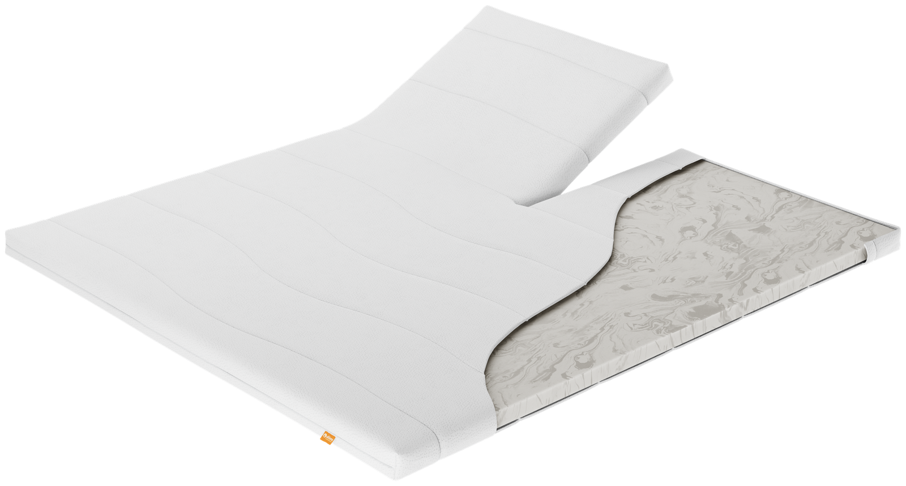

Topmatrassen — Initio
Initio: dezelfde comfortlaag, twee vullingen.
Energyfoam of geperforeerd latex — hetzelfde verschil in ligcomfort als bij de PE10- en PL20-matras. Ontdek welke vulling bij jou past.
01 — Initio Energyfoam
Stevige ondersteuning, vertrouwd comfort.
De Energyfoam-variant van de Initio-topmatras heeft een kerndikte van 4 cm en een totale dikte van circa 8 cm. Energyfoam voelt steviger aan dan het geperforeerde latex van de andere variant — hetzelfde onderscheid als tussen de PE10- en PL20-matras. Dezelfde wasbare tijk, gevuld met klimaatvezel, als de matrassenlijn.
- Kern van Energyfoam, steviger dan geperforeerd latex
- Wasbare tijk, gevuld met klimaatvezel
- Kerndikte 4 cm, totale dikte ca. 8 cm
- Verkrijgbaar in alle maten
- Ook als split-topper, voor verstelbare bedden
Goed om te weten: Energyfoam geeft, net als bij PE10, een stevigere ondersteuning dan latex — prettig als je liever niet te diep wegzakt.

Initio Energyfoam
Initio geperforeerd latex02 — Initio geperforeerd latex
Soepel comfort, met extra ventilatie.
De latex-variant van de Initio-topmatras deelt dezelfde opbouw als de Energyfoam-uitvoering — kerndikte 4 cm, totale dikte ca. 8 cm, dezelfde wasbare tijk gevuld met klimaatvezel — maar voelt soepeler aan. De perforaties in het latex zorgen bovendien voor extra luchtcirculatie.
- Kern van geperforeerd latex, soepeler dan Energyfoam
- Wasbare tijk, gevuld met klimaatvezel
- Kerndikte 4 cm, totale dikte ca. 8 cm
- Verkrijgbaar in alle maten
- Ook als split-topper, voor verstelbare bedden
Goed om te weten: net als bij PL20 zorgen de perforaties in het latex voor extra ventilatie — fijn als je snel warm slaapt.
Combineer je Initio-topmatras met de rest van de collectie
Bekijk ook CumLaude en onze andere productlijnen.
Bekijk alle topmatrassen